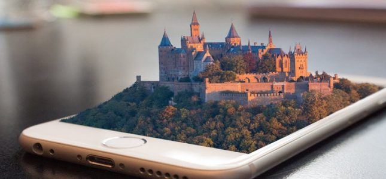

La Realidad Aumentada (RA) es una tecnología que permite superponer elementos virtuales sobre nuestra visión de la realidad. Cada vez más demandada, en el mundo de la tecnología, la RA se ha convertido en una de las tecnologías más importantes para la creación de experiencias virtuales.
La Realidad Aumentada nos permite añadir capas de información visual sobre el mundo real que nos rodea, utilizando la tecnología, dispositivos como pueden ser nuestros propios teléfonos móviles. Esto nos ayuda a generar experiencias que aportan un conocimiento relevante sobre nuestro entorno, y además recibimos esa información en tiempo real.
Mediante la realidad aumentada el mundo virtual se entremezcla con el mundo real, de manera contextualizada, y siempre con el objetivo de comprender mejor todo lo que nos rodea.
Obtener más información